Победители 2017
Главный приз
{kind=link}
МИСТИЧЕСКИЙ БОРОБУДУР
БОРОБУДУР, МАГЕЛАН, ИНДОНЕЗИЯ
Автор: HANDI LAKSONO
ИНДОНЕЗИЯ
Перейти на сайт фотографа
КАМЕРА: CANON 5D MARK III; CANON
Премия Lumix
{kind=link}
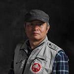
История фотографии: На склоне горы к северу от Цинлиньских гор в провинции Шэньси группа Рокселланов ринопитек ищет что-нибудь поесть на деревьях. Обезьянка нашла киви и кричит матери. Исходя из языка жестов и крика, я предполагаю, что смысл сообщения примерно такой: «мама, здесь есть несколько киви, иди сюда, и будем есть вместе».
Хей Мама
ШАНХИ ПРОВИНЦИЯ, КИТАЙ
Автор Kuanliang Ding
ХУБЕЙ, КИТАЙ
Камера: Nikon D800; Nikkor AF-S 300mm/2.8 lens; 1/250 sec; ƒ/2.8; ISO 800.
Дикая природа
{kind=link}
Победитель
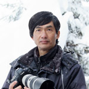
История фотографии: TЭто снежная обезьяна (Macaca Fuscata). Камелии и горные вишни цветут в Японии с зимы до весны, а снежные обезьяны часто питаются этими цветами, нектар цветов сладок и питателен. Этой самке около 36 лет и она самая старая в своей группе. Утром она поднялась на деревья, ела цветы один за другим и отдыхала на горном вишневом дереве. Ее рот был полон желтой камелии. Она была беззаботна и продолжала наслаждаться ранним весенним днем.
На вишнёвом дереве
Арашияма, город Киото, Япония
Автор SHINICHI MASUDA
Токио, Япония
Камера: Canon EOS-1DX; EF100-400F4.5/5.6LIS; 1/2000 sec; ƒ/5.6; ISO 1600.
{kind=link}
Почётная оценка
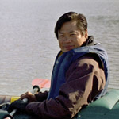
История фотографии: Осенью 2015 года бесчисленное число лосося плыло вверх по течению в ручье на краю полуострова Сиретоко. Лисицы обычно едят рыбу, оставшуюся после медведей, но в этом году мы видели множество случаев, когда лисицы сами ловили лосося.
Большая миграция лосося
Раусу, Сиретоко, Япония
Автор SHINJI SATO
Хоккайдо, Япония
Камера: Sony A77II; Minoruta 400mm f/4.5; 1/640sec; f/6.3; ISO 1000.
{kind=link}
Почётная оценка
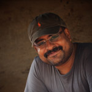
История фотографии: Съёмка широко распространённых животных — самая сложная вещь. Гульманы очень распространены, но ждать нужного момента сложно и нужно много терпения. Однажды днем на дереве сидела группа малабарских гульманов. Но этот игривый младенец наслаждался игрой со своими родителями, качаясь на их хвостах и падая, а затем сразу поднимался и начинал всё заново. Его мать не обращала внимания на эти проделки и другие тоже. Гульманы очень общительны и детёныши играют так часто, как могут. Акробатическая игра - это, вероятно, способ тренировки лазания по деревьям и в конечном итоге помогает им развить сильные кости и мышцы. Игра также помогает им развивать социальные связи и навыки общения. В 2014 году я совершил 15 поездок в Индию в поисках идеального кадра. В одной из поездок я смог сделать только этот снимок, и я более чем доволен результатом. Игривая обезьянка со своей семьей — это особенный снимок для меня. Он рассказывает историю, которая может принести улыбку в сердце каждого.
Веселье для всех возрастов
Кабини, Индия
Автор THOMAS VIJAYAN
Оквилл, Канада
Перейти на сайт фотографа
Камера: Nikon D4; Nikkor 300mm; 1/1250 sec; f/5.6; ISO 1000
{kind=link}
Почётная оценка
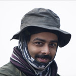
История фотографии: Национальный парк Индира Ганди — это охраняемая территория, расположенная на холмах Анамайлай, недалеко от Поллачи, Тамилнад, Индия. Этот заповедник находится на рассмотрении ЮНЕСКО в рамках Всемирного наследия Западных Гатов и является домом для многих экзотических и эндемичных видов, таких как Вандеру, Большой индийский калао, Капюшонный гульман и Нилгирийский тар.
Взгляд в сердце
Индира Ганди, Индия
Автор PRAMOD C L
Гургаон, Индия
Вандеру — дневной обитатель тропического леса. Как настоящие обитатели леса, они превосходно лазят по деревьем и проводят большую часть своей жизни в верхнем куполе тропических влажных вечнозеленых лесов. В отличие от других макак, они предпочитают избегать человека, и это было основной проблемой, с которой я столкнулся, пытаясь сфотографировать этих замечательных животных. В начале они были недоступны и держались на безопасном расстоянии от меня. Тем не менее, я был решительно настроен запечатлеть эти моменты и продлить свое пребывание еще на пару дней.
Камера: Canon EOS-1D X Mark II; EF500mm f/4L IS II USM; 1/800 sec; f/4; ISO 1000.
{kind=link}
Почётная оценка
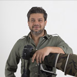
История фотографии: В ранние утренние часы в Национальном парке Корбетт в Индии стадо слонов решило остановиться у берега реки для пыльной ванны. Сюрреалистичный утренний свет, пробивающийся сквозь пыль, дал этому изображению восхитительное свечение, окутывающее слонов в облаках пыли.
Золотая пыль
Национальный парк Корбетт, Индия
Автор SHIVANG MEHTA
Харьяна, Индия
Перейти на сайт фотографа
Камера: Canon 1Dx Mark II; Canon 400mm f2.8 IS2; 1/1000 sec; f/7.1; ISO 1000.
{kind=link}
Почётная оценка
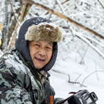
История фотографии: Золотая мартышка района Шэньнунцзя — национально охраняемая обезьяна, живущая от 1500 до 3300 метров над уровнем моря в лесах и горах. Это одна из самых красивых обезьян в мире. Чтобы сделать фотографии, я изучаю их особенности, привычки и обычаи. Мои снимки демонстрируют жизнь обезьян и используются для изучения этих животных в родной среде.
Золотая обезьяна
Шэньнунцзя, Хубэй, Китай
Автор MINGJIAN YU
Ухань, Китай
Камера: Canon EOS-1DX Mark II; EF70-200mm; 1/800 sec; f/6.3; ISO 1000.
Пейзаж
{kind=link}
Победитель
История фотографии: Я сделал эту фотографию, надеясь поймать снег в середине зимы, когда он светится. Я поставил долгую выдержку, снимая этот кадр, чтобы получить эффект падающих звезд. Во время съёмки озеро ещё не полностью замерло, вы можете увидеть синие и белые узоры.Камера: Canon 1Dx; Canon 24-70Lmm; 3.2 sec; ƒ/7.1; ISO 800.
{kind=link}
Почётная оценка
Таинственная земля
Бромо, остров Ява, Индонезия
Автор MIN TAN
Саравак, Малайзия
Перейти на сайт фотографа
Камера: Nikon D810; Nikon 70-200mm; 1/30 sec; f/8.0; ISO 100
{kind=link}
Почётная оценка
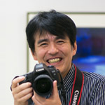
История фотографии: радуга. Я рискнул и увеличил масштаб радуги.
Раскраска
Гифу, Япония
Автор YOSHIKAZU MIYAJIMA
Тадзими, Япония
Камера: Canon EOS 6D; EF24-105mm F4L IS USM; 2.5 seconds; ƒ/16; ISO 200.
{kind=link}
Почётная оценка
Цветение
Озеро Нукабира, Хоккайдо, Япония
Автор YUMIKO NAKAGAMI
Хоккайдо, Япония
Камера: Canon EOS 70D; Sigma 10mm Fisheye; 1/30 sec; f/8; ISO 400.
{kind=link}
Почётная оценка
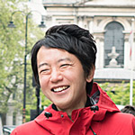
История фотографии: Хотя шёл дождь, и прогноз погоды был плохим, мне было хорошо и поехал на пляж на котором часто бываю. Пока я катался под дождем на рассвете, я увидел, как облака начали слегка менять цвет. Это был момент, когда я решил сделать снимок. Ветер двигался быстро, поэтому я использовал долгую выдержку, чтобы передать движения облаков.
Предвестник
Йочи, Хоккайдо, Япония
Автор HIROSHI TANITA
Саппоро, Япония
Перейти на сайт фотографа
Камера: Sony ILCE-7RM2; Sony SEL2470GM; 60 seconds; f/13; ISO 100.
{kind=link}
Почётная оценка
История фотографии: Гора Фудзияма — это сокровищница облаков мистической формы. Я сделал этот снимок на лесной дороге Инокасира после рассвета. Я фотографирую Фудзияма в течение 6 лет, но я никогда не видел таких облаков.Камера: Nikon D800; NIKON 70-200mm f/2.8 GII ED; 1/640 sec; f/8.0; ISO 100.
Океан
{kind=link}
Победитель
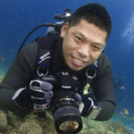
История фотографии: Научное название этого осьминога — Enteroctopus dofleini. Эта фотография была сделана на глубине 5 метров при температуре воды 3 градуса Цельсия. Я сделал эту фотографию в тот момент когда осьминог поймал свою добычу. Крупный план щупалец этого осьминога красив и впечатляющ.
Полёт
Хакодате, Хоккайдо, Япония
Автор TORU KASUYA
Канагава, Япония
Камера: Canon EOS 7D; Tokina AT-X 107 DX Fish eye zoom 10-17mm F3.5-4.5; 1/180 sec; f/8; IOS 200; Flash Inon D2000.
{kind=link}
Почётная оценка
История фотографии: Цефея цефея - крупная желеобразная рыба, которая может достигать от 19 до 23 дюймов в диаметре. Иногда её называют Короной или Цветной капустой. Медуза имеет несколько наростов, как выступы на вершине центрального холма её колокола, который окружен «рвом». Медуза часто употребляется в качестве деликатеса и для традиционных лечебных целей в Китае и Японии. Когда я фотографировала эту прекрасную медузу, в действительности я искала крошечных рыб, которые часто плавают вокруг них. Вместо этого я нашла этого краба размером с ладонь. Морские черепахи охотятся на Цефею цефею; незадолго до обнаружения этой медузы, мы видели гигантскую зеленую черепаху поблизости.Камера: Nikon D750; Sigma 15mm; 1/200 sec; f/11; ISO 125.
{kind=link}
Почётная оценка
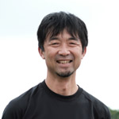
История фотографии: Июнь: облачная погода; температура воды 20 градусов; глубина 5 метров. На окраине Нотоджимы внезапно появляются рои Ушастых медуз, известные как «кураж-дама». Среди них плывет рыба семейства иглобрюхих, как будто блуждает. Я остался на той же глубине, что и медузы, чтобы сделать эту фотографию.
Блуждание
Нотошима, Исикава, Япония
Автор MITSURU TOMIYA
Осака, Япония
Камера: Nikon D610; AF-S NIKKOR 14-24mm f/2.8G ED; 1/250 sec; f/11; ISO 800.
{kind=link}
Почётная оценка
История фотографии: В Подводном царстве Таитийская бородавчатая рыба-клоун устроила засаду. Она максируется и выглядит как коралл или камень, ждет вечно, а затем БАМ! В доли секунды поглощает свою добычу. Для этой рыбы, напоминающей бушмена в охоте, я подчеркнул её окружение длительной выдержкой затвора и его текстуру с направленным светом, который имеет свой цвет.Камера: Canon 6D; Canon 100mm macro; 1/5 sec; f/20; ISO50; Flash Inon Z240.
{kind=link}
Почётная оценка
История фотографии: Морены легко обнаруживаются под водой. Они обычно застенчивы и прячутся под камнями, когда дайверы приближаются к ним. Этой мурене, однако, было любопытно увидеть камеру, что дало мне немного пространства, чтобы использовать ультрафиолетовый фокусный свет в качестве подсветки для создания синего силуэта. Я особенно выделил глаз рыбы.Камера: Canon 5DS; Canon 100mm/f2.8l macro; 1/80 sec; f/9; ISO 1600.
{kind=link}
Почётная оценка
Большой рот
Хаяма, Канагава, Япония
Автор MITSURU TOMIYA
Осака, Япония
Камера: Nikon D610; AF-S VR MicroNikkor 105mm f/2.8G IF-ED; 1/200 sec; f/22; ISO 200.
Маленький мир
{kind=link}
Победитель
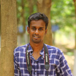
История фотографии: Во второй половине дня я вышел из дома и вдруг заметил, что оса кружит вокруг растений, строя гнездо. В тот самый момент я бросился за своей камерой, но мне пришлось ждать более 4 часов, чтобы, наконец, сделать фотографию осы с парализованной гусеницей для её будущего ребенка. На следующий день она почти закончила свою невероятную работу матери.
Гончар
Коимбатур, Индия
Автор KARTHIKEYAN SHANMUGASUNDARAM
Коимбатур, Индия
Перейти на сайт фотографа
Камера: Canon 5D Mark III; Sigma 105mm f7.1; 1/640 sec; ƒ/11; ISO 2500.
{kind=link}
Почётная оценка
История фотографии: Куски этого дерева упали на землю и выстроились друг над другом. Каждый из этих трех стручков, выглядит как миниатюрный лес. Если вы внимательно посмотрите, вы увидите в стручках деревья с корнями в почве. Макроскопический мир можно увидеть в микроскопическом мире.Камера: Nikon D3S; Tamron AF 90mm/2.8 macro lens; 1/180 sec; f/13; ISO 1000.
Patil_TreeFrog_24x36_small.jpg){kind=link}
Почётная оценка
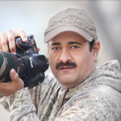
История фотографии: Эта фотография была сделана в национальном парке Моллем, Индия. Название вида: малабарская скользящая лягушка и встречается она только в Гоа и Конкане в Индии.
Эта лягушка замаскировалась на листе так, что её нельзя было увидеть. Они очень активны при сильных осадках и чаще всего видны ночью. Их можно найти по звуку, который они издают.
Эта лягушка можно увидеть только в сезон дождей. Очень сложно снимать при сильных осадках: вы должны обезопасить всё свое оборудование от дождя. Большую часть времени деревья, на которых находятся лягушки, находятся в воде. Чтобы сделать этот снимок мне потребовалось много раз войти в воду. Вместо того, чтобы поставить фонарик перед листом, я поставил его сзади, и в итоге снимок выглядит отлично.
Подсветка
Национальный парк Моллем
Автор VINOD (BAIJU) PATIL
Аурангабад, Индия
Перейти на сайт фотографа
Камера: Nikon D800E; Nikon 105 mm f/3.2; 1/250 ses; f/10; ISO 200.
{kind=link}
Почётная оценка
История фотографии: Есть множество растений и насекомых, которые выживают летом в городе Ухань. В поле фиолетовых цветов брокколи в полном расцвете на листьях Bauhinia Linn находились пара Ctenuchidae. Листья Bauhinia Linn среда обитания Ctenuchidae. Эти маленькие насекомые украшают природу своим существованием.Камера: Canon 70D; Tamron AF 90mm/2.8 macro lens; 1/80 sec; f/9; ISO 400
{kind=link}
Почётная оценка
Вылупившиеся из яйца
Река Гомати, Лакхимпур, Индия
Автор SATPAL SINGH
Мохаммади, Индия
Перейти на сайт фотографа
Камера: Nikon D7100; Nikon AF-S VR Micro-Nikkor 105mm f/2.8; 1/500 sec; f/32; ISO 320
{kind=link}
Почётная оценка
История фотографии: Поздней осенью я заметил несколько личинок пилильщика, которые едят листья на розовой ветке. Ярко-желтая личинка привлекла мое внимание своим свечением. Поскольку погода была холодной, у гусеницы не так много времени для роста. До наступления зимы гусеница завершает метаморфозу жизни. Вид этой гусеницы растрогал меня. Гусенице необходимо быстро расти, чтобы успеть завершить трансформацию.Камера: Nikon D7000; Nikkor AF-S 85mm f/3.5 macro lens; 1/250sec; f/9; ISO 200
Птицы
{kind=link}
Победитель
История фотографии: Это фото было сделано в моей любимой колонии ткачей в Уране. Ткачевые зяблики очень общительные птицы и многие виды гнездятся в колониях. В таких условиях мы часто видим, как самцы и самки ссорятся вокруг гнезда. Известно, что самки кладут яйца в гнезда других самок. Можно предположить, что, возможно, на снимке две самки деруться за одно и то же гнездо, или, возможно, одна из самок пыталась отложить яйца в другом гнезде и встретила отпор от самца и самки, которые «владели» гнездом.Камера: Nikon D3; Nikon 600mm f/4 G VR + TC14EII; 1/1600 sec; f/8; ISO 3200; Nikon SB-800 flash @ 1/64th power.
{kind=link}
Почётная оценка
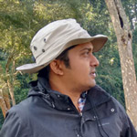
История фотографии: В заповеднике была только одна пара Азиатских ябиру и я хотел их сфотографировать против света. Это было возможно только вечером, и только если птица летит на меня, так как остальная часть района была недоступна из-за болотистой земли. Наконец, на восьмой день мне посчастливилось сделать тот снимок, который я хотел, и, к счастью, это была самка.
Азиатский ябиру
Национальный парк Кеоладео, Индия
Автор INDRANIL BASU MALLICK
Пуна, Индия
Перейти на сайт фотографа
Камера: Canon EOS 70D; Canon 500mm f/4 with 1.4x extender; 1/1600 sec; f/5.6; ISO 500.
{kind=link}
Почётная оценка
История фотографии: Сад в Судзуке считается самым крупным сливовым садом в Японии. В этот день я пробыл там 11 часов среди слив и диких птиц, которые были в саду. К сожалению, погода с самого утра была дождливой и пасмурной, и я не сделал фотографии под голубым небом, которые хотел. Тем не менее, крупные розовые цветы, которые расцвели рано весной и огромные, великолепные и красиво опущенные сливы создали потрясающий мир розового. Я ждал японских белоглазок и дождался.Камера: LUMIX GH4; LEICA DG VARIO-ELMAR 100-400mm; 1/200 sec; f/7.1; ISO 250.
{kind=link}
Почётная оценка
История фотографии:Я сделал этот снимок на острове Куббар, небольшом острове в штате Кувейт, летом, во время размножения крачек. Температура была очень высокая и иногда достигала 45 градусов. Мне удалось снять снимок взлетающего птенца, только начинающего верить в себя. Он повторяет движения своих родителей, пытаясь взлететь и быть готовым к миграции.Камера: Canon 7D Mark II; Canon EF500mm IS II USM; 1/8000 sec; f/4; ISO 320.
{kind=link}
Почётная оценка
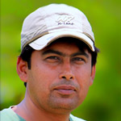
История фотографии: Пару лет назад на речном берегу я нашел колонию синехвостых щурок. Синехвостые щурки — фантастический объект. Они всегда заняты сбором пищи и трудно получить хороший фон на речном берегу. Это был мой четвёртый день подряд в этом месте, и я ждал, чтобы сделать снимок с нужным освещением. Через несколько часов я получил снимок, которого ждал целую неделю.
Синехвостые щурки
Бардхаман, Западная Бенгалия, Индия
Автор KALLOL MUKHERJEE
Западная Бенгалия, Индия
Перейти на сайт фотографа
Камера: Nikon D800; Nikon 300mmm f/4 + 1.4 TC II; 1/2000 sec; f/5.6; ISO 1600.
Patil_Peacock-24x36_small.jpg){kind=link}
Почётная оценка
Утренний туман
Национальный парк Кеоладео, Индия
Автор VINOD (BAIJU) PATIL
Аурангабад, Индия
Перейти на сайт фотографа
Камера: Nikon D800E; Nikon 800 mm; 1/250 sec; f/5.6; ISO 100.
Видео
Победитель
История фотографии:Образ снежной женщины Юки-онна появляется в японских сказках. Это прекрасная и красивая женщина и, говорят, что она очаровывает мужчин, а потом замораживает их. Японский журавль, который живет в северных районах Хоккайдо, тоже очаровывает людей с давних времен. Его чистая белая кожа, черное оперение, малиновые румяна и его фигура прекрасны. Он танцует в снежном мире, но его не потрогать. Возможно, многие люди пожертвовали своей жизнью любуясь этим журавлём. Его чарующая красота успокаивает и очаровывает нас, мы забываемся и замерзаем под ледяным небом. В этом журавле мы можем почувствовать Юки-онну из японских легенд, чья красота удерживает людей в плену до тех пор, пока они не замерзнут.Камера: Panasonic GH5, Nikon D500
Почётная оценка

Чудеса природы
Острова Раджа-Ампат, Индонезия
Автор JENNIFER O’NEIL
Адабама, США
Камера: Canon 5D Mark III; Sigma 15mm lens.
Почётная оценка
Отплытие детёныша морской черепахи
Бонинские острова, Япония
Автор MANA NOMOTO
Автор MANA NOMOTO
Камера: Canon EOS 7D; Canon EF-S 10-22mm f3.5-4.5 USM.
Почётная оценка
Жизнь пятнистых сов
Гандинагар, Индия
Автор HARDIK RATHOD
Гандинагар, Индия
Перейти на сайт фотографа
Камера: Nikon D500, Nikon 200-500MM AF-S NIKKOR 200-500MM F/5.6E ED VR.
Почётная оценка
История фотографии: Лазающие заяцы, как полагают, появились на Земле около 6 миллионов лет назад и теперь живут только на Амаме, Осиме и Токуносиме. Я занимаюсь исследованиями и фотографированием этих кроликов уже более 32 лет. Самки рожают своих крольчат не в собственном гнезде, а в вырытой яме. Крольчата остаются в ней примерно 40 дней и кормятся грудью только около двух минут каждые два дня ночью. После кормления мать покрывает нору грязью, чтобы защитить своих детей от хищников.Камера: Canon XF100; XF 205; DJI Phantom 4.
Почётная оценка
Горячая точка
Залив Каннуры, Кочин, Индия
Автор NORIHIRO FUKUI
Кочин, Индия
Перейти на сайт фотографа